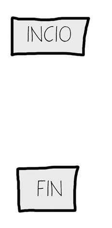
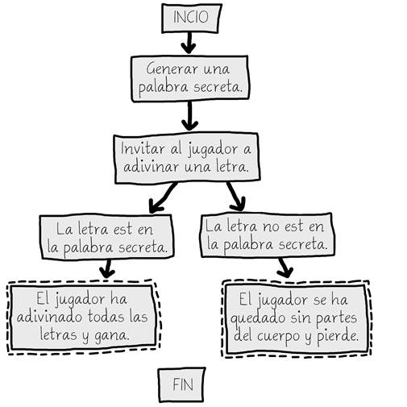
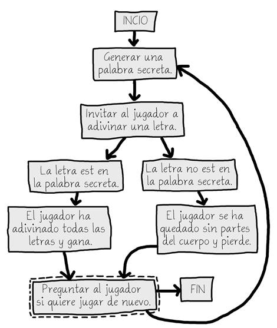
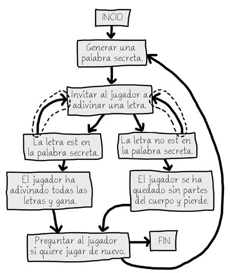

|
|
Capítulo 8 |
Diagramas de Flujo |

Temas Tratados En Este Capítulo:
· Cómo jugar al Ahorcado
· Arte ASCII
· Diseño de un Programa mediante Diagramas de Flujo.
En este capítulo, diseñarás el juego del Ahorcado. Este juego es más complicado que nuestro juego anterior, pero también más divertido. Como este juego es avanzado, deberías planearlo cuidadosamente antes creando un diagrama de flujo(explicado más adelante). En el siguiente capítulo, escribiremos el código para el Ahorcado.
Cómo jugar al Ahorcado
El Ahorcado es un juego para dos personas, usualmente jugado con lápiz y papel. Un jugador piensa en una palabra y dibuja un espacio en la página por cada letra de la palabra. Entonces el segundo jugador intenta adivinar letras de la palabra.
Si adivina correctamente, el primer jugador escribe la letra en el espacio correspondiente. Si la letra no está en la palabra, el primer jugador dibuja una parte del cuerpo del ahorcado. Si el segundo jugador consigue adivinar todas las letras de la palabra antes de que el dibujo del ahorcado esté completo, gana. ¡Pero si no consigue adivinar la palabra a tiempo el segundo jugador pierde!
Prueba de ejecución del Ahorcado
Aquí hay un ejemplo de lo que el jugador podría ver al ejecutar el programa Ahorcado que escribiremos en el próximo capítulo. El texto que el jugador ingresa se muestra en negrita.
A H O R C A D O
+---+
| |
|
|
|
|
=========
Letras incorrectas:
_ _ _ _
Adivina una letra.
o
+---+
| |
|
|
|
|
=========
Letras incorrectas:
_ o _ o
Adivina una letra.
l
+---+
| |
O |
|
|
|
=========
Letras incorrectas: l
_ o _ o
Adivina una letra.
r
+---+
| |
O |
| |
|
|
=========
Letras incorrectas: lr
_ o _ o
Adivina una letra.
n
+---+
| |
O |
| |
|
|
=========
Letras incorrectas: lr
_ o n o
Adivina una letra.
o
Ya has probado esa letra. Elige otra.
Adivina una letra.
m
¡Sí! ¡La palabra secreta es "mono"! ¡Has ganado!
¿Quieres jugar de nuevo? (sí o no)
no
Arte ASCII
Los gráficos para el Ahorcado son caracteres del teclado impresos en la pantalla. Este tipo de gráficos se llama arte ASCII (se pronuncia “asqui”), y fue una especie de precursor a emojii. Aquí hay un gato dibujado con arte ASCII:
__________________
_____/ xx xxx \_____
_/xxx xx xxx xxx \__
__/ xxx xxx xx xxx \__
/xxxxxxxxx xx xx xx xx xxx\
/ xx /\ xx xx\
/ / \ x xx \
| /\ | \ xx x\
| | \ | \____ Z x \
| | \____/ \ z xxx |
| | \ z |
\/ \ \
/ ____/ | |
__| \____ | xxx|
/ | ___ ___------- __/ x|
/ | | | _______ ____/ |
| o\ -------- \_/ _/ ___/ xx /
|oo \ _____/ _/______/ xx/
\ \__ __/ xx /
\ \______________/ x_/
\____ _______/
\_______________________________/
Diseño de un Programa mediante Diagramas de Flujo
Este juego es un poco más complicado que los que hemos visto hasta ahora, de modo que tómate un momento para pensar cómo está implementado. Primero necesitarás crear un diagrama de flujo (como el que hay al final del capítulo Reino de Dragones) para ayudar a visualizar lo que este programa hará. Este capítulo explicará lo que son los diagramas de flujo y por qué son útiles. El siguiente capítulo explicará el código fuente para el juego del Ahorcado.
Un diagrama de flujo es un diagrama que muestra una serie de pasos como recuadros conectados por flechas. Cada recuadro representa un paso, y las flechas muestran qué pasos llevan a qué otros pasos. Coloca tu dedo sobre el recuadro "Inicio" del diagrama de flujo y recorre el programa siguiendo las flechas a los otros recuadros hasta que llegues al recuadro “Fin”.
La Figura 8-1 es un diagrama de flujo completo para el Ahorcado. Sólo puedes moverte de un recuadro a otro en la dirección de la flecha. Nunca puedes volver hacia atrás a menos que haya una segunda flecha apuntando en dirección opuesta, como en el recuadro “El jugador ya ha probado esa letra”.

Figura 8-1: El diagrama de flujo completo del juego del Ahorcado.
Por supuesto, no es estrictamente necesario que hagas un diagrama de flujo. Podrías simplemente comenzar escribiendo código. Pero a menudo una vez que comiences a programar pensarás en cosas que es necesario agregar o cambiar. Podrías terminar teniendo que borrar una gran parte de tu código, lo que sería un desperdicio de esfuerzo. Para evitar esto, siempre es mejor planear cómo el programa va a funcionar antes de comenzar a escribirlo.
Crear el Diagrama de Flujo
Tus diagramas de flujo no siempre tienen que verse exactamente como este. Siempre y cuando entiendas el diagrama de flujo que has hecho, será útil cuando comiences a escribir código. En la Figura 8-2 se muestra un diagrama de flujo que comienza con sólo un recuadro “Inicio” y un recuadro “Fin”:

Figura 8-2: Comienza tu diagrama de flujo con los recuadros Inicio y Fin.
Ahora piensa en lo que ocurre cuando juegas al Ahorcado. Primero, la computadora piensa en una palabra secreta. Luego el jugador intentará adivinar las letras. Agrega recuadros para estos eventos, como se muestra en la Figura 8-3. Los recuadros que son nuevos para cada diagrama de flujo se dibujan con bordes en línea quebrada.
Las flechas muestran el orden en que el programa debería moverse. Es decir, primero el programa debería generar una palabra secreta, y luego de eso debería invitar al jugador a adivinar una letra.

Figura 8-3: Dibuja los dos primeros pasos del Ahorcado como recuadros con descripciones.
Pero el juego no termina después de que el jugador prueba una letra. Necesita comprobar si esa letra pertenece o no a la palabra secreta.
Creando Ramificaciones a partir de un Recuadro del Diagrama de Flujo
Hay dos posibilidades: la letra puede estar en la palabra o no. Esto significa que necesitas agregar dos nuevos recuadros al diagrama de flujo, uno por cada caso. Esto crea una ramificación en el diagrama de flujo, como se muestra en la Figura 8-4:

Figura 8-4: La rama consiste en dos flechas hacia recuadros diferentes.
Si la letra está en la pantalla secreta, comprueba si el jugador ha adivinado todas las letras y ha ganado. Si la letra no está en la palabra del juego, se agrega otra parte del cuerpo al ahorcado. Agrega recuadros para esos casos también.
No necesitas una flecha desde el casillero “La letra está en la palabra secreta” al casillero “El jugador se ha quedado sin partes del cuerpo y pierde”, porque es imposible perder mientras el jugador acierte. También es imposible ganar mientras el jugador no acierte, de modo que tampoco precisamos dibujar esa otra flecha. El diagrama de flujo se ve ahora como la Figura 8-5.

Figura 8-5: Luego de la ramificación, los pasos continúan por caminos separados..
Finalizar o Reiniciar el Juego
Una vez que el jugador ha ganado o perdido, pregúntale si desea jugar de nuevo con una nueva palabra secreta. Si el jugador no quiere jugar de nuevo, el programa termina. Si el programa no termina, pensamos una nueva palabra secreta. Esto se muestra en la Figura 8-6.

Figura 8-6: El diagrama de flujo se ramifica al preguntar al jugador si quiere jugar de nuevo.
Adivinando Nuevamente
El jugador no adivina una letra sólo una vez. Tiene que continuar probando letras hasta que gane o pierda. Necesitarás dibujar dos nuevas flechas, como se muestra en la Figura 8-7.

Figura 8-7: Las nuevas flechas (resaltadas) denotan que el jugador puede adivinar otra vez.
¿Qué ocurre si el jugador prueba la misma letra más de una vez? En lugar de ganar o perder en este caso, le permitiremos probar una nueva letra. Este nuevo recuadro se muestra en la Figura 8-8.

Figura 8-8: Agregamos un paso en caso de que el jugador pruebe una letra por segunda vez.
Ofreciendo Retroalimentación al Jugador
El jugador necesita saber qué está pasando en el juego. El programa debería mostrar el tablero del Ahorcado y la palabra secreta (con espacios en blanco en las letras que aún no ha adivinado). Estas ayudas visuales permitirán que el jugador sepa qué tan cerca está de ganar o perder el juego.
Esta información deberá ser actualizada cada vez que el jugador pruebe una letra. Agrega un recuadro “Mostrar el tablero y los espacios vacíos al jugador” al diagrama de flujo entre los recuadros “Generar una palabra secreta” e “Invitar al jugador a adivinar una letra”. Estos recuadros se muestran en la Figura 8-9.

Figura 8-9: Agregamos “Mostrar el tablero y los espacios vacíos al jugador” para dar información al jugador.
¡Eso se ve bien! Este diagrama de flujo
reproduce completamente todo lo que puede ocurrir en el Ahorcado y en qué
orden. Cuando diseñes tus propios juegos, un diagrama de flujo puede ayudarte a
recordar todo lo que necesitas codificar.
Resumen
Puede parecer muchísimo trabajo dibujar un diagrama de flujo del programa primero. Después de todo, ¡la gente quiere jugar juegos, no mirar diagramas de flujo! Pero es mucho más fácil hacer cambios y notar problemas pensando un poco sobre cómo funciona el programa antes de escribir el código.
Si te lanzas a escribir el código primero, puedes llegar a descubrir problemas que requieren que cambies el código que has escrito. Cada vez que cambias tu código, estás corriendo el riesgo de introducir nuevos errores por cambiar demasiado, o demasiado poco. Es mucho mejor saber qué es lo que quieres construir antes de construirlo.